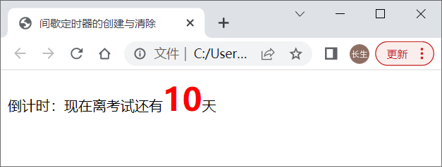
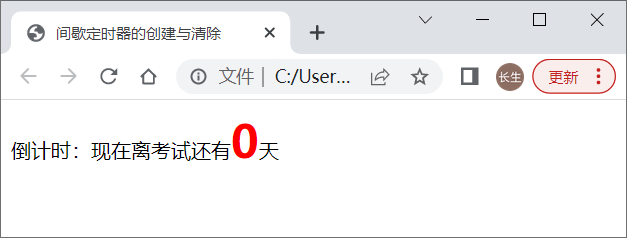
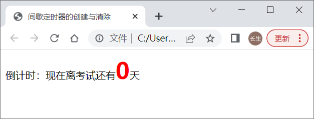

首页 > 编程笔记
JS定时器：setInterval()和setTimeout()方法
JS 中的 window 对象提供了定时器功能。定时器的功能是：在规定的时间自动执行某个函数。
根据执行的机制，定时器分为间歇定时器和延迟（超时）定时器：
间歇定时器会以指定的间歇时间作为周期循环不断地执行函数；而延迟定时器则只在时间到期时执行一次函数。
在 JS 中，对象方法的调用格式通常为：
使用 setInterval() 创建间歇定时器的格式如下：
setInterval() 执行后将返回一个唯一的数值 ID。通过定时器返回的 ID，可以清除定时器。
清除间歇定时器的格式如下：
【示例1】JS 间歇定时器的创建和清除。
示例代码中使用了间歇定时器实现倒计时功能，计时时间和变量 num 的值对应。为了不让计时时间显示负值，需要在 num 变量的值为0时清除定时器，以停止计时。
本例在 Chrome 浏览器中运行结果如图1和图2所示。
setTimeout() 方法表示经过第二个参数所设定的时间后，执行一次第一个参数指定的操作。setTimeout() 执行后同样会返回一个唯一的数值ID。
setTimeout 和 setInterval 的不同之处在于：setInterval 可以循环不断地执行指定操作，而 setTimeout 只能执行一次参数指定的操作。不过，通过对 setTimeout() 的递归调用，可以让 setTimout() 达到与 setInterval() 同样的循环不断执行操作的目的。
和间歇定时器一样，延迟定时器也可以通过其返回的 ID 来清除。清除延迟定时器的格式如下：
下面使用 setTimeout() 来修改示例1来实现同样的倒计时的功能。
【示例2】JS 延迟定时器的创建和清除。
【示例3】使用 JS 定时器实现图片轮播。
根据执行的机制，定时器分为间歇定时器和延迟（超时）定时器：
- 前者是每间歇一段时间就会执行指定的函数；
- 后者是在指定的时间到期后就会执行指定的函数。
间歇定时器会以指定的间歇时间作为周期循环不断地执行函数；而延迟定时器则只在时间到期时执行一次函数。
JS 间歇定时器的创建与清除
间歇定时器的创建使用 window 对象的 setInterval() 方法。在 JS 中，对象方法的调用格式通常为：
对象名.方法
但由于 window 对象是全局对象，访问同一个窗口中的方法时，可以省略对象名“window”，所以对 window 对象方法，通常都是直接使用方法。使用 setInterval() 创建间歇定时器的格式如下：
[定时器对象ID = ]setInterval(函数调用|函数定义,毫秒);
第一个参数
setInterval() 主要包含两个参数，第一个参数就是定时器需要定时执行的函数，该参数可以是一个用函数名表示的函数调用语句，也可以是一个函数定义语句，示例如下：
function fn(){
alert("创建间歇定时器");
}
setInterval(fn,1000);//定时器第一个参数为函数调用语句
//以上代码等效下面的代码：
setInterval(function(){
alert("创建间歇定时器")
},1000);//定时器的第一个参数为函数定义语句, 注：其中定义的函数可以是匿名或有名, 但通常都定义为匿名
第二个参数
setInterval() 第二参数是一个单位为毫秒的数值（表示执行第一个参数指定操作所需的等待时间）。该方法表示每隔由第二个参数设定的毫秒数，就执行第一个参数指定的操作。setInterval() 执行后将返回一个唯一的数值 ID。通过定时器返回的 ID，可以清除定时器。
清除间歇定时器的格式如下：
clearInterval(定时器对象ID);下面使用倒计时的示例演示间歇定时器的创建和清除。
【示例1】JS 间歇定时器的创建和清除。
<!doctype html>
<html>
<head>
<meta charset="utf-8">
<title>间歇定时器的创建与清除</title>
<style>
span{color:red;font-weight:bold;font-size:36px;}
</style>
<script>
window.onload = function(){
var oSpan = document.getElementById('day');
var num = 10;
var timer = setInterval(function(){//创建定时器
oSpan.innerHTML = --num;
if(num == 0){
clearInterval(timer);//清除定时器
}
},86400000);
};
</script>
</head>
<body>
倒计时：现在离考试还有<span id="day">10</span>天
</body>
</html>
上述代码的功能是从 num 变量指定的时间开始倒计时，每隔一天（86400000 毫秒）显示一个数值，当 num 变量值为 0 时，最后显示 0 值并停止倒计时。示例代码中使用了间歇定时器实现倒计时功能，计时时间和变量 num 的值对应。为了不让计时时间显示负值，需要在 num 变量的值为0时清除定时器，以停止计时。
本例在 Chrome 浏览器中运行结果如图1和图2所示。

图1：计时开始时的状态

图2：计时结束时的状态
图1：计时开始时的状态

图2：计时结束时的状态
JS 延迟定时器的创建和清除
延迟定时器的创建使用 window 对象的 setTimeout() 方法，创建格式如下：[定时器对象ID = ]setTimeout(函数调用|函数定义,毫秒);setTimeout() 主要包含两个参数：
- 第一个参数就是定时器需要定时执行的函数，该参数可以是一个用函数名表示的函数调用语句，也可以是一个函数定义语句；
- 第二个参数是一个单位为毫秒的数值（表示执行第一个参数指定操作所需的等待时间）。
setTimeout() 方法表示经过第二个参数所设定的时间后，执行一次第一个参数指定的操作。setTimeout() 执行后同样会返回一个唯一的数值ID。
setTimeout 和 setInterval 的不同之处在于：setInterval 可以循环不断地执行指定操作，而 setTimeout 只能执行一次参数指定的操作。不过，通过对 setTimeout() 的递归调用，可以让 setTimout() 达到与 setInterval() 同样的循环不断执行操作的目的。
和间歇定时器一样，延迟定时器也可以通过其返回的 ID 来清除。清除延迟定时器的格式如下：
clearTimeout(定时器对象ID);
下面使用 setTimeout() 来修改示例1来实现同样的倒计时的功能。
【示例2】JS 延迟定时器的创建和清除。
<!doctype html>
<html>
<head>
<meta charset="utf-8">
<title>延迟定时器的创建与清除</title>
<style>
span{color:red;font-weight:bold;font-size:36px;}
</style>
</head>
<body>
倒计时：现在离考试还有<span id = "day">10</span>天
<script>
var oSpan = document.getElementById('day');;
var timer = null;
var num = 10;
function count(){
oSpan.innerHTML = --num;
timer = setTimeout(count,86400000);//递归调用延迟定时器
if(num == 0){
clearTimeout(timer);//清除定时器
}
}
timer = setTimeout(count,86400000);//创建延迟定时器
</script>
</body>
</html>
示例2的功能和示例1完全相同，由于 setTimeout() 在指定时间到达后只执行一次操作，为了达到与 setInterval() 循环不断执行操作同样的效果，上述代码通过在 count() 中递归调用 setTimeout() 来模拟 setInterval() 的间歇函数调用效果。
使用定时器实现图片轮播
这里我们将使用定时器实现图片的轮播（自动切换）。【示例3】使用 JS 定时器实现图片轮播。
<!doctype html>
<html>
<head>
<meta charset="utf-8">
<title>使用定时器实现图片轮播</title>
<style>
ul{margin:0;padding:0;}
li{display:inline-block;}
body{background:#333;}
#pic{width:300px;height:206px; margin:0 auto;}
#pic img{width:300px;height:206px;}
#pic ul{margin-top:10px;text-align:center;}
#pic .item,#pic .active{width:9px;height:9px;cursor: pointer; border-radius:10px;margin:1px 1px 1px 8px;}
#pic .item {background:#FFF;}
#pic .active {background: #F60;}
</style>
<script>
window.onload = function(){
var oDiv = document.getElementById('pic');
var oImg = oDiv.getElementsByTagName('img')[0];
var oUl = oDiv.getElementsByTagName('ul')[0];
var arrUrl = ['images/p1.jpg','images/p2.jpg','images/p3.jpg','images/p4.jpg'];
var aLi = oDiv.getElementsByTagName('li');
var num = 0;
var timer = null;//定时器
//生成对应图片个数的列表项
for(var i = 0; i < arrUrl.length; i++){
oUl.innerHTML += "<li class = 'item'></li>";
}
//初始化
function fnTab(){
oImg.src = arrUrl[num];
for(var i = 0; i < aLi.length; i++){
aLi[i].className = 'item';//首先全部清空活动状态
}
aLi[num].className = 'item active';//然后设置当前li为活动状态
}
fnTab();//调用函数实现初始化设置
for(var j = 0; j < aLi.length; j++){
aLi[j].index = j;//为每个列表项自定义索引属性, 属性值和数组下标一一对应
aLi[j].onclick = function(){
num = this.index;//将当前li的索引属性值赋给变量num
fnTab();
};
}
function autoPlay(){//使用定时器实现每隔2秒自动切换图片
timer = setInterval(function(){
num++;
num %= arrUrl.length;
fnTab();
},2000);
}
autoPlay();//调用自动切换图片函数
oImg.onmouseover = function(){//光标移到图片上停止图片切换
clearInterval(timer);
}
oImg.onmouseout = autoPlay;//光标移开图片后继续自动切换图片
};
</script>
</head>
<body>
<div id="pic">
<img src="" />
<ul>
</ul>
</div>
</body>
</html>
关注公众号「站长严长生」，在手机上阅读所有教程，随时随地都能学习。内含一款搜索神器，免费下载全网书籍和视频。

微信扫码关注公众号